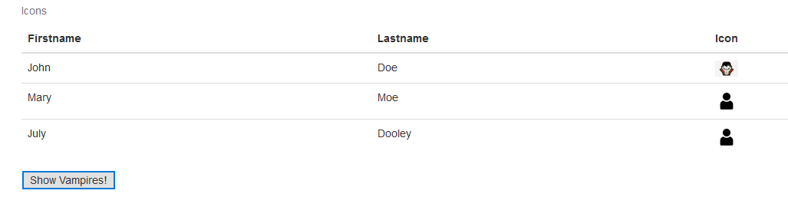

Mvc and javascript
Where should “Model” be deployed? Server side or client side?

It depends…
- One thousand users vs one million users?
- Too many users.
- Client.
- Heavy jobs handled by servers or clients?
- Reduce the burden of a client device.
- Server.
- Hotel example:
- 1 front desk, fast enough to help 10 clients check in => deploy on server
- 1 front desk, not fast enough to help 100 clients print check out receipts => deploy on client, mobile phone check out, email PDF
View: JavaScript
- This tutorial is based on https://www.w3schools.com/js/
- JavaScript is the programming language of HTML and the Web.
- JavaScript is the default scripting language for HTML.
- JavaScript defines behavior: functional requirements and MVC.
- JavaScript vs jQuery
- Similar to CSS vs BootStrap
- jQuery is a JavaScript library, we will learning
- “Fundamental and necessary” vs “make your life easier”
- Example 15
- HTML tag <button> defines a clickable button.
- What can JavaScript do?
- Change HTML content
- Change HTML attribute value
- Change HTML styles (CSS)
- “Inline” method to define behaviors.
- Semicolon (;) is used to separate each line of your code.
- We will learn how to dynamically generate the page contents.
Group Activity 3: 10 minutes
- Work on Example 15
- Add the third icon column
- At first: human icon
- Click button: replace John’s icon to vampire
- Hint: use “.src” to replace image

| Index | Prev | Next |